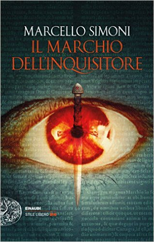

Autore: Marcello Simoni
Editore: Newton Compton
Pagine: 341
Genere: Thriller
Anno Pubblicazione: 2016
Prima di entrare nel dettaglio, mi sembra doveroso e giusto nei vostri confronti porre una inevitabile premessa: L’abbazia dei cento inganni mi è stata inviata dalla casa editrice pur non avendo letto i due capitoli precedenti. Questo, comunque, non ha tolto – a lettura conclusa – o pregiudicato la capacità stessa di questo romanzo di trasportare il suo lettore in un mondo lontano e in un contesto storico che è di per sé misterioso, controverso ed indubbiamente affascinante.
Ci troviamo a metà del 1300 a Ferrara.
E’ qui che si svolgono i fatti principali in un’epoca dove la Chiesa – ben lontana da essere protettrice di anime perdute e spinta da un’ insaziabile ed ipocrita bramosia - sta allungando le sue mani, avide e pericolose, su ogni centro di potere, economico e politico.
La prima scena che si dipana dinanzi agli occhi del lettore è quella di una lunga e silente processione, fatta di uomini incappucciati e condotta da una donna altera ed imponente, dai lunghi capelli rossi, a cavallo di una bestia immonda che sembra provenire direttamente dalle bocche infuocate dell’Inferno. Visione che viene presto accompagnata da sinistri presagi e tangibili avvertimenti seguiti da tre semplice ed inequivocabili parole Pro Bono Malum.
La città – uscita decimata dalla recente epidemia di peste – si trova ad affrontare simili presagi che sembrano condurre verso la suggestiva ipotesi di un’incombente apocalisse; realtà o finzione che la Chiesa non vuole lasciare incompiuta e, capeggiata dall’inquisitore Lamberto da Cingoli, attraverso la voce e le gesta del vescovo Guido de Biasio, si accinge a compiere tutto ciò che è in suo potere per combattere questa nuova, potente minaccia. Nell’imminente indagine viene coinvolto il cavaliere Maynard de Rocheblanche che – anche contro la sua stessa volontà – si ritrova coinvolto in una storia di misteri, intrighi e inganni che sembrano legare tutti i personaggi in una spessa trama intricata e difficile da sciogliere. E’, forse, una coincidenza che il cavaliere sia portatore e conoscitore di un segreto che farebbe gola ad ogni singolo esponente della sacra madre Chiesa? E’ davvero la soluzione dell’indagine ad interessare i prelati coinvolti o è forse l’entrare in possesso dell’agognato Lapis Exilii, terza reliquia di Gesù Cristo?
Dubbi iniziano ad insinuarsi nella mente del cavaliere che, in una ricerca che si rivelerà ben più oscura e minacciosa di quanto previsto, verrà affiancato dall’amico e pittore Gualtiero De’ Bruni, dall’abate Andrea di Pomposa – prezioso aiuto per un’indagine che rischierà di mettere in pericolo ben più di una vita - la sorella Eudeline Rocheblanche insieme alla sua protetta Isabeau.
Quello che si dipana dinanzi agli occhi del lettore è un quadro decisamente variopinto accompagnato da vistose pennellate di intrighi e inganni di ogni sorta. Marcello Simoni – tessendo una trama decisamente intricata ed adrenalinica – ci accompagna in un’epoca storica misteriosa ed affascinante tra i vicoli di una lontana Ferrara che, grazie a descrizioni precise e ben delineate, riusciamo quasi a scorgere tra la spessa coltre di nebbia che avvolge la sua delicata e oscura atmosfera.
Fin dalle prime pagine, L’Abbazia dei cento inganni riporta alla mente le atmosfere antiche e gli intrighi senza tempo di romanzi come Il nome della rosa, pur presentando al suo lettore una prosa narrativa mai eccessivamente arcaica o difficilmente comprensibile e rimanendo sempre fedele ai dettami stilistici e descrittivi di quel tempo. In gioco non c’è solo una frenetica e subdola corsa al potere, perpetrata anche a danni di poveri innocenti pur di raggiungere l’agognato soglio pontificio, ma il richiamo ai sentimenti più nobili dell’animo umano; sentimenti che non hanno tempo e che si presentano sempre nella loro veste immutata ed attuale: l’amore e il sacrificio per esso, l’amicizia e l’onore, la lotta per il bene e la sconfitta del male. Nel bene e nel male, appunto, quelle affrontate dallo scrittore sono tematiche che potremmo facilmente ritrovare, magari con vicende e protagonisti più moderni, anche ai giorni nostri e non ci stupiremmo poi molto nel constatare come nulla, in fondo, sia cambiato perché, in questo romanzo avvincente e strabordante di mistero, Marcello Simoni racchiude i vizi e le debolezze più profonde dell’animo umano, sfaccettature che non hanno età o epoche particolari, ma che si ripresentano puntualmente sotto forme e pregiudizi diversi.
Degni di nota sono i personaggi che si affacciano sulla scena principale portando alla narrazione caratteri forti, eterogenei e ben delineati; in particolare, ho apprezzato il modo scelto dall’autore nel caratterizzare il mondo femminile allontanandosi dal classico stereotipo che vede le donne costrette ad assistere alle gesta di uomini coraggiosi e fieri dalle retrovie, spettatrici consapevoli di poter portare il loro fondamentale contributo per raggiungere l’agognato scopo e ribaltare le sorti del valoroso protagonista.
Eudeline e Isabeau sono donne coraggiose, impavide, orgogliose ed intraprendenti in grado di mettersi esattamente allo stesso piano dei personaggi maschili che con la loro arguzia, forza ed intelligenza spingono il lettore a divorare ogni pagina con crescente bramosia per scoprire, finalmente, quale lato risulterà vittorioso nell’eterna lotta tra bene e male, tra il coraggio più valoroso e la viltà più cieca.
Marcello Simoni ci regala un thriller storico ben costruito, intrigante ed appassionante, in grado di legare inevitabilmente il lettore alle sue pagine. Non mancano i riferimenti artistici, ovviamente storici e anche critici di un’epoca indubbiamente affascinante, ma che – allo stesso tempo – lascia sui suoi protagonisti un pesante velo di colpe e recriminazioni.
I collegamenti con i due capitoli precedenti, presentati in modo chiaro e preciso durante la narrazione, permettono una lettura accattivante e senza particolari difficoltà di comprensione anche chi si avvicina per la prima volta a questa trilogia. Una lettura che mi sento di consigliare agli amanti del genere, ovviamente, ma anche a chi è affascinato dalla storia medioevale, dai suoi misteri e dagli inevitabili silenzi che si ergono potenti attorno alle sue imperturbabili vicende.
L'AUTORE - È nato a Comacchio nel 1975. Ex archeologo e bibliotecario, laureato in Lettere, ha pubblicato diversi saggi storici; con Il mercante di libri maledetti, romanzo d’esordio, è stato per oltre un anno in testa alle classifiche e ha vinto il 60° Premio Bancarella. I diritti di traduzione sono stati acquistati in diciotto Paesi. Con la Newton Compton ha pubblicato La biblioteca perduta dell’alchimista, Il labirinto ai confini del mondo, secondo e terzo capitolo della trilogia del famoso mercante; L’isola dei monaci senza nome, con il quale ha vinto il Premio Lizza d’Oro 2013, e La cattedrale dei morti. Nel 2014 è uscito L’abbazia dei cento peccati, primo capitolo di una nuova trilogia, a cui seguono L’abbazia dei cento delitti e L'abbazia dei cento inganni.
Dell'autore su THRILLERNORD:
 IL LIBRO - Nella Roma del Secolo di Ferro, a pochi giorni dall'inizio del XIII giubileo, la danza macabra incisa su un opuscolo di contenuto libertino sembra aver ispirato l'omicidio di un religioso. Sul caso viene chiamato a investigare l'inquisitore Girolamo Svampa, nominato commissarius dagli alti seggi della curia capitolina...
Se siete lettori appassionati visitate questo blog
Leggereinsilenzio